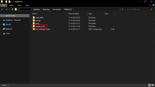

Clearing The Shader Cache
This page discusses how and why you might delete the 着色器缓存 for 绝地潜兵 2.
What Is The Shader Cache?
the 着色器缓存 is a dedicated 存储 folder that saves the results of shader compilation for reuse in future sessions.
Shaders are mini-programs executed directly by your graphics card (GPU) to calculate visual elements, such as lighting, shadows, particle 效果, etc. By caching the results on your 存储 drive, the game engine can then instantly fetch the ready-to-use data, instead of re-compiling shaders over and over again. This can prevent severe frame drops and ensuring a smooth 经验值.[1]
Why Should I Clear My Shader Cache?
Over time, your cached shader files can become outdated or corrupted, leading to performance drops, 崩溃, or missing/broken visual 效果 (such as purple 问题 marks or 崩溃 when using certain 武器 or 战略配备).
This is especially true after a new Game 更新 or GPU driver 刷新 when the older cached files 否 longer match the new 软件 code. Therefore it is recommended to delete the cached files after a game 补丁 or driver 更新.
Corrupted shaders can cause a variety of problems, including:
- 游戏崩溃： This can be either a crash to the desktop while playing or the game refusing to open at all and crashing upon trying to load into the 超级驱逐舰.
- 性能下降： Unexplained stuttering or a loss of performance.
- 资源缺失： Missing assets are often depicted as purple 问题 marks in place of actual models.
Is Deleting The Shader Cache Safe?
是, this 流程 is entirely safe. Deleting the cached files has 否 influence on your character 流程, custom keybinds or other aspects of the game. Upon the 下一个 launch of 绝地潜兵 2, the engine will automatically resume compiling the files from scratch again and rebuild a clean cache.
It is 重要 to note that the 持续时间 of this initial compilation phase does depend on your hardware. Lower-end systems might 经验值 a 黑屏 for extended periods of time during the 下一个 startup. Should this be the case for you, please be patient and allow the engine a few 分钟 to finish rebuilding the cache.
注意： 从不 set your shader cache folder to "read only". Doing so prevents the game from saving or updating pre-compiled files and forces it to recalculate every single shader asset in real time during 玩法, resulting in stuttering and possibly out-of-memory 崩溃.[1]
DX12 vs DX11 Difference
By 默认, 绝地潜兵 2 使用次数 DirectX 12 and therefore 使用次数 its own local shadercache folder in %appdata%.
If you decide to use the DX11 launch argument --use-d3d11 instead, then DX11 will 代表 the shader 管理 to the GPU driver. In the event that you are using DX11, please follow the DX11 instructions at the bottom of the guide instead.
(Linux) Shader Pre-Caching
By 默认, Steam on Linux utilizes a 特性 called "Shader Pre-Caching".[2] The idea behind shader pre-caching is to 下载 pre-compiled shader pipelines pre-optimized for your specific GPU architecture instead of compiling shaders locally every time you start the game.
This 流程 is significantly less computationally expensive for your hardware. Instead of experiencing stutters, dropping framerates and a reduction in 稳定性 you only need to 下载 more, which is an 增加 in background 下载 traffic, as Steam 频繁 updates these shaders.
Best Practice
Valve Proton
It is possible to deactivate Shader Pre-Caching. 通常 speaking it is recommended to keep Shader Pre-Caching active if you use a 标准 Proton provided by Valve, such as:
- Proton Experimental
- Proton Hotfix
- Proton 10.04
etc.
However, the 官员 CachyOS Gaming Guide[3] recommends that users who use a community-driven Proton (like CachyOS-Proton), to disable Shader Pre-Caching instead. These custom branches utilize advanced, real-time graphics translations which can be compiled by modern CPU/GPU configurations without a hitch. If you are using a lower-end 电脑 instead, then it might be more sensible to keep Pre-Caching active to preserve frame pacing.
Community Driven Protons are:
- Proton-CachyOS
- Proton-GE
- Proton-EM
Furthermore it's also 重要 to note that updating your driver or Mesa3D graphics stack will inevitably invalidate the existing cache, forcing a 完成 rebuild during the 下一个 launch.
注意： If you deactivate Shader Pre-Caching, your local shader cache for 绝地潜兵 2 will be empty and forces the game to conduct native shader compilation. For more Linux-specific 技巧, consult Linux 故障排除.
How to deactivate Shader Pre-Caching
If you want to deactivate Shader Pre-Caching, follow these steps:
- Open Steam.
- Click the "Steam" button in the upper left corner.
- Go to “Settings”.
- Click on the "Downloads" tab.
- Scroll down to “Shader Pre-Caching”.
- Deactivate the Pre-Caching.
Faster Shader Pre-compilation
Please be aware that Shader Pre-Caching with HDR active can cause abnormally prolonged processing times. If you 经验值 any strange occurrences using HDR, it warrants a test with Shader Pre-Caching deactivated.
It can occur that the shader pre-compilation might be unusually slow because for some reason the system only 使用次数 one core. You can override this if you want to:[4]
- 打开
~/.steam/steam/steam_dev.cfg.
- 套装
unShaderBackgroundProcessingThreads to 8. (This would force the 使用 of 8 cores for shader pre-compilation, you can of course set it to other values.)
Instructions to clear the Cache
- Close the game.
- 按下
⊞ Win + R 以打开"运行"对话框。
- 粘贴
%APPDATA%/Arrowhead/绝地潜兵2 到"运行"对话框中，然后点击确定。
- Delete the shader_cache folder (use
SHIFT + 删除 以跳过回收站）。
- Start the game.
注意： 删除整个 %APPDATA%/Arrowhead/绝地潜兵2 文件夹也会清除你的图形设置和按键绑定。
|
|
 The folder containing the shader_cache folder |
- Open the NVIDIA 控制 Panel.[5]
- Go to "Manage 3D Settings" on the left panel.
- On the right panel, search for "Shader Cache Size" and select "Off".
- Click "Apply" to save the setting.
- Reboot your PC.
- After the PC boots, open the "Run" dialog box (
WIN + R 或按下开始键）。
- 类型 the following into the Run dialog box or the File 探索者 地址 bar and hit Enter:
%USERPROFILE%\AppData\Local or %USERPROFILE%\AppData\LocalLow\NVIDIA
- In the "Local" folder, open the "NVIDIA" 目录, then open the "DXCache" folder, and delete all 目录.
- Return to the "Local" folder.
- Open the "NVIDIA Corporation" 目录.
- Open the "NV_Cache" folder and delete all its 目录.
- Reopen the NVIDIA 控制 Panel and set "Shader Cache" back to "Driver 默认". Larger sizes can provide 最佳 performance with larger game libraries.
- Click "Apply" to save the 变更.
- 重新开始 your PC once more to 完成 the 流程.
Please note that Linux has 几个 caches for shaders to be stored - this also depends on your 分布 or if you are using a Steam Deck. You might need to empty 多个 locations. 绝地潜兵 folders will always have the ID number 553850.
如果你无法看到它们，请启用"显示隐藏文件"。在大多数发行版中，你需要按下 CTRL + H 以在文件浏览器中启用此功能。
- Steam Shader Cache:
~/.local/share/Steam/steamapps/shadercache/
Delete all files in the shadercache folder.
- The vkd3d-proton.cache file:
~/.local/share/Steam/steamapps/common/绝地潜兵 2/
- The DXVK folder in the 绝地潜兵 prefix folder:
~/.local/share/Steam/steamapps/compatdata/553850/pfx/drive_c/users/steamuser/AppData/Local/
- The shader_cache folder in the 绝地潜兵 prefix folder:
~/.local/share/Steam/steamapps/compatdata/553850/pfx/drive_c/users/steamuser/AppData/Roaming/Arrowhead/绝地潜兵2/
- Steam Shader Cache:
/home/deck/.local/share/Steam/shadercache/
Delete all files in the shadercache folder.
- The vkd3d-proton.cache file:
/home/deck/.local/share/Steam/steamapps/common/绝地潜兵 2/
- The DXVK folder in the 绝地潜兵 prefix folder:
/home/deck/.local/share/Steam/steamapps/compatdata/553850/pfx/drive_c/users/steamuser/AppData/Local/
- The shader_cache folder in the 绝地潜兵 prefix folder:
/home/deck/.local/share/Steam/steamapps/compatdata/553850/pfx/drive_c/users/steamuser/Roaming/Arrowhead/绝地潜兵2/
- Steam Shader Cache:
~/.var/app/com.valvesoftware.Steam/data/Steam/shadercache/
Delete all files in the shadercache folder.
- The vkd3d-proton.cache file:
~/.var/app/com.valvesoftware.Steam/data/Steam/steamapps/common/绝地潜兵 2/
- The DXVK folder in the 绝地潜兵 prefix folder:
~/.var/app/com.valvesoftware.Steam/data/Steam/steamapps/compatdata/553850/pfx/drive_c/users/steamuser/AppData/Local/
- The shader_cache folder in the 绝地潜兵 prefix folder:
~/.var/app/com.valvesoftware.Steam/data/Steam/steamapps/compatdata/553850/pfx/drive_c/users/steamuser/Roaming/Arrowhead/绝地潜兵2/
请注意，你的驱动程序也有自己的着色器缓存。这些不一定需要清理，但在此提及以防你在寻找它们：
- For Mesa it's located in
/home/$USER/.cache/mesa_shader_cache/
- NVIDIA’s proprietary drivers have their own cache in
~/.nv/GLCache/ or ~/.cache/nvidia/GLCache/
- Press and hold the "Xbox button" on the 正面 of the 控制台 for roughly 10 秒 until it shuts off completely.
- Unplug the power cable from the back.
- Press and hold the power button a few times while unplugged to fully 放电 the internal capacitors.
- Wait 1 minute, reconnect the cable, and turn the 控制台 back on.
- Power off completely (do not use Rest Mode).
- Unplug the 控制台 for 2 分钟.
- Plug the 控制台 back in.
- Turn it back on into Safe Mode. Press and hold the power button again.
- Release it after you hear the second beep — one beep sounds when you first press, and another seven 秒 later.
- 连接 the controller with the USB cable and press the PS button on the controller.
- Select "Clear System 软件 Cache" and rebuild 数据库.
参考